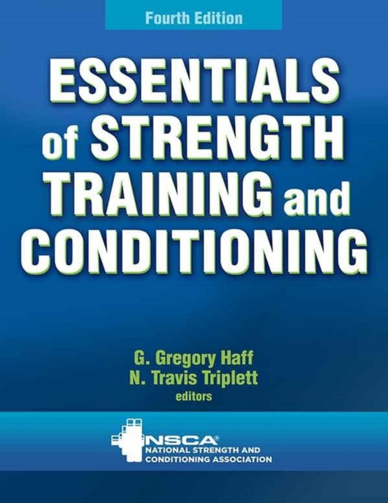

我的讀書庫
/
CSCS

Strength & Conditioning
CSCS 肌力與體能訓練
Essentials of Strength Training and Conditioning · 4th Ed.
24
章節
0
已完成
0%
進度
章節目錄
Part I
Exercise Sciences 運動科學基礎
01
Structure and Function of Body Systems
Musculoskeletal · Neuromuscular · Cardiovascular · Respiratory
已完成
02
Biomechanics of Resistance Exercise
Skeletal Musculature · Joint Biomechanics · Human Strength and Power
已完成
03
Bioenergetics of Exercise and Training
Biological Energy Systems · Substrate Depletion · Metabolic Specificity
已完成
04
Endocrine Responses to Resistance Exercise
Hormones · Anabolic Hormones · Adrenal Hormones
已完成
05
Adaptations to Anaerobic Training Programs
Neural · Muscular · Connective Tissue · Overtraining · Detraining
已完成
06
Adaptations to Aerobic Endurance Training Programs
Acute Responses · Chronic Adaptations · Overtraining
已完成
07
Age- and Sex-Related Differences
Children · Female Athletes · Older Adults
已完成
Part II
Nutrition and Pharmacology 營養與藥理
08
Psychology of Athletic Preparation and Performance
Arousal · Anxiety · Motivation · Attention · Focus
已完成
09
Basic Nutrition Factors in Health
Macronutrients · Vitamins · Minerals · Fluid and Electrolytes
已完成
10
Nutrition Strategies for Maximizing Performance
Pre/During/Post Competition · Body Composition · Eating Disorders
已完成
11
Performance-Enhancing Substances and Methods
Hormones · Dietary Supplements · PES Types
已完成
Part III
Testing and Evaluation 測試與評估
12
Principles of Test Selection and Administration
Testing Terminology · Test Quality · Test Selection
已完成
13
Administration, Scoring, and Interpretation of Selected Tests
Athletic Performance · Statistical Evaluation
已完成
Part IV
Exercise Techniques 運動技術
14
Warm-Up and Flexibility Training
Warm-Up · Flexibility · Types of Stretching
已完成
15
Exercise Technique for Free Weight and Machine Training
Fundamentals · Spotting Free Weight Exercises
已完成
16
Exercise Technique for Alternative Modes and Nontraditional Implements
Bodyweight · Core Stability · Variable-Resistance · Unilateral
已完成
Part V
Program Design 訓練計畫設計
17
Program Design for Resistance Training
Needs Analysis · Exercise Selection · Load · Volume · Rest
已完成
18
Program Design and Technique for Plyometric Training
Mechanics · Program Design · Age Considerations · Safety
已完成
19
Program Design and Technique for Speed and Agility Training
Speed Mechanics · Neurophysiology · Agility · Change of Direction
已完成
20
Program Design and Technique for Aerobic Endurance Training
Aerobic Performance Factors · Training Types · Season Application
已完成
21
Periodization
Periodization Hierarchy · Linear vs Undulating · Annual Plan
已完成
22
Rehabilitation and Reconditioning
Types of Injury · Tissue Healing · Program Design · Reinjury Risk
未開始
Part VI
Facility and Administration 場館管理
23
Facility Design, Layout, and Organization
Facility Design · Equipment Arrangement · Maintenance
未開始
24
Facility Policies, Procedures, and Legal Issues
Legal & Ethical Issues · Emergency Planning · Staff Policies
未開始